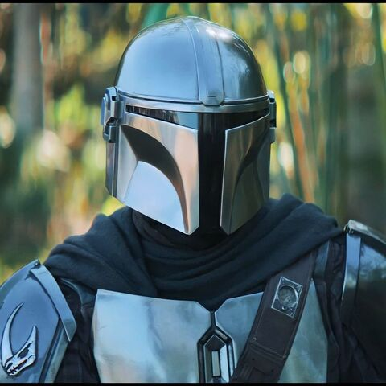
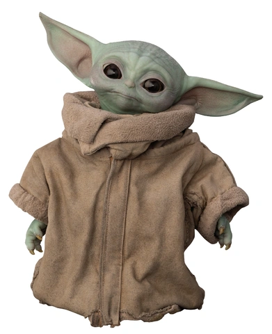

Luke Skywalker

Luke Skywalker es un personaje importante en la saga de Star Wars. Es el hijo de Anakin Skywalker y Padmé Amidala, y se convierte en un Jedi poderoso que desafía al Imperio Galáctico.
Nacimiento: 19 ABY
Afiliación: Rebelión, Orden Jedi
Armas: Sable de luz azul
Leia Organa

Leia Organa es una líder rebelde y política en la saga de Star Wars. Es la hermana gemela de Luke Skywalker y una de las figuras clave en la lucha contra el Imperio Galáctico.
Nacimiento: 19 ABY
Afiliación: Rebelión, Resistencia
Armas: Bláster
Darth Vader

Darth Vader, anteriormente conocido como Anakin Skywalker, es uno de los principales antagonistas en la saga de Star Wars. Es un Lord Sith que sirve al Emperador Palpatine y lidera la cacería de los Jedi.
Nacimiento: 41.9 BBY
Afiliación: Imperio Galáctico, Orden Sith
Armas: Sable de luz rojo
Obi-Wan Kenobi

Obi-Wan Kenobi es un maestro Jedi que juega un papel importante en la lucha contra los Sith y el Imperio Galáctico. Es el maestro de Anakin Skywalker y más tarde, de Luke Skywalker.
Nacimiento: 57 BBY
Afiliación: Orden Jedi
Armas: Sable de luz azul
Din Djarin
Din Djarin, comúnmente conocido como El Mandaloriano, es un cazarrecompensas mandaloriano que opera en la galaxia. Es conocido por su habilidad en el combate y su código de honor mandaloriano.
Afiliación: Culto Mandaloriano
Armas: Bláster, armadura mandaloriana
Grogu (Baby Yoda)
Grogu, apodado cariñosamente como Baby Yoda, es un miembro de la misma especie que el legendario maestro Jedi Yoda. Es sensible a la Fuerza y posee habilidades que lo hacen muy buscado por diversos intereses en la galaxia.
Afiliación: Ninguna (asociado con Din Djarin)
Habilidades: Sensibilidad a la Fuerza
Sabine Wren
Sabine Wren es una guerrera Mandaloriana y artista de la demolición, conocida por su destreza en el combate y su habilidad para manejar explosivos. Fue miembro de los Rebeldes y jugó un papel crucial en la lucha contra el Imperio Galáctico.
Afiliación: Rebeldes de Lothal
Habilidades: Combate cuerpo a cuerpo, demolición
Ezra Bridger
Ezra Bridger es un joven sensible a la Fuerza que se une a los Rebeldes en su lucha contra el Imperio Galáctico. A lo largo de su viaje, desarrolla sus habilidades Jedi bajo la tutela de Kanan Jarrus y se convierte en una pieza clave en la lucha por la libertad.
Afiliación: Rebeldes de Lothal
Habilidades: Sensibilidad a la Fuerza, habilidades Jedi
Ahsoka Tano
Ahsoka Tano es una ex Jedi Padawan que se convierte en una poderosa luchadora por la libertad en la galaxia. Fue entrenada por Anakin Skywalker durante las Guerras Clon y más tarde luchó contra el Imperio Galáctico como parte de la Rebelión.
Afiliación: Rebelión, Jedi (anteriormente)
Habilidades: Combate con sables de luz, habilidades Jedi, estrategia táctica